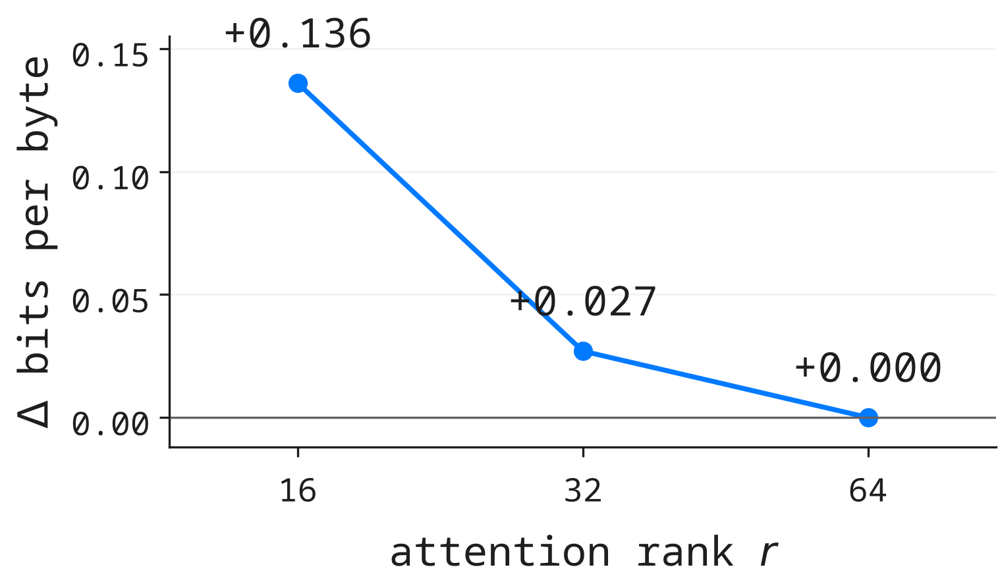

compression
Given a fixed W, how well can rank r imitate it?
answer: badly
Eckart–Young says how much you lose. It does not say what you lose it for — and the difference between those two questions is where a neural network actually gets compressed.
A matrix W ∈ ℝm×n is a linear map, and the honest picture is geometric: it sends the unit sphere to an ellipsoid.
The semi-axes of that ellipsoid are the singular values σ₁ ≥ σ₂ ≥ ⋯ ≥ 0. They say how much the map does in each direction — and the natural hope is that most of them say almost nothing.
geometry only · no learning yet
| factor | what it does |
|---|---|
| Vᵀ | turns the input onto the principal axes |
| Σ | stretches axis i by σᵢ |
| U | turns the result into output space |
The σᵢ say how much the map does in each direction. If the tail of the spectrum is negligible, the matrix is, for practical purposes, a much smaller matrix.
Let Wr = Σi≤r σᵢ uᵢ vᵢᵀ. Then for every matrix B with rank B ≤ r,
Any rank-r candidate B has a null space of dimension ≥ n − r, so it contains a unit vector z with Bz = 0. On that z:
Choosing z inside span(vr+1, …, vn) gives ‖Wz‖ ≥ σr+1, and summing over the remaining directions reproduces exactly √(σr+1² + ⋯).
no optimisation · no training · true for every matrix


| matrix | mass at r = 64 |
|---|---|
| moe.down | 41% |
| q_proj | 45% |
| mem_dense | 28% |
| expert v | 100% |
Trained matrices are not nearly low-rank.
Truncating a trained layer to rank 64 throws away more than half of it by the theorem's own measure. The last row is different for a structural reason — next slide.
The expert matrix is rank 64 by construction: we never store a 64×2730 matrix — we store two thin ones whose product has rank ≤ 64.
answer: badly
answer: almost free
Eckart–Young bounds the first. It says nothing about the second — and the second is what gets deployed.

three seeds per arm · identical budget · the same data
| rank | Δ bits/byte | storage |
|---|---|---|
| 64 | baseline | 1.00× |
| 32 | +0.027 | 0.50× |
| 16 | +0.136 | 0.25× |
Halving the rank costs about 2% of quality; quartering it costs 10%.
The spectrum predicts the shape of this curve. Only the experiment gives its height.
exercise — take any layer, compute σᵢ, predict the loss after truncation with √(Σi>r σᵢ²), then measure.
the ratio between prediction and reality is the interesting number.